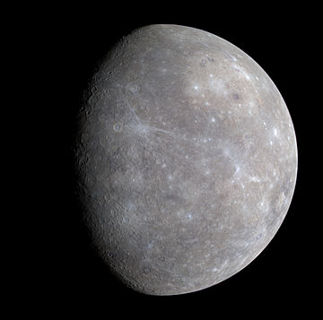

تیر یا عُطارِد[۶] نزدیکترین سیاره به خورشید در منظومهٔ شمسی و تندروترین سیارهٔ این منظومه است که با سرعتی حدود ۴۷٫۳۲ کیلومتر بر ثانیه، هر ۸۸ روز یکبار خورشید را دور میزند.[۷] از این رو سیارهای گریزپا است و به همین دلیل است که، ایرانیان باستان آن را «تیر» نامیدهاند. در روم باستان «مِرکوری» یا «پیک خدایان» لقبش داده بودند و نام یونانی آن هرمس خدای سرعت بوده است.[۸] تیر (عطارد) کوچکترین و درونیترین سیارهٔ منظومهٔ شمسی است و مانند سیارهٔ ناهید در بخش درونی مدار زمین به دور خورشید قرار گرفته است. این سیاره ماه ندارد و سطح رو به خورشیدِ آن بسیار داغ و رویهٔ پشت به خورشید آن بسیار سرد است. تیر مدار انتقالی خود را در ۸۷٫۹۷ روز زمینی میپیماید. مشاهدهٔ عطارد از زمین هرگز از ۲۸ درجهٔ فاصلهٔ زاویهای فراتر نمیرود. در نتیجهٔ این نزدیکی به خورشید، این سیاره فقط پس از غروب خورشید در افق شرقی پیش از طلوع آفتاب؛ معمولاً در شرایط گرگ و میش، در نزدیکی افق غربی قابل دیدهشدن است. در این زمان، ممکن است به صورت یک ستارهٔ روشن به نظر برسد، اما مشاهدهٔ آن اغلب به مراتب دشوارتر از مشاهدهٔ سیارهٔ زهره است. عطارد در طول دورهٔ تناوب مداری خود، طیف کاملی از گامهای سیارهای را، مانند زهره و ماه، به نمایش میگذارد که به صورت تلسکوپی از زمین میتواند تماشا و پیگیری شود. طول دورهٔ تناوب مداری این گامهای عطارد (همزمانی با توجه به جابهجایی زمین) در حدود ۱۱۶ روز است. چرخش تیر (عطارد) با گرفتاری در قفل جزر و مدی و رزنانس مداری ۳:۲ با خورشید، در سامانه خورشیدی یک چرخش سیارهای بیهمتاست. این سیاره به ازای هر دو بار گردش به دور خورشید، دقیقاً سهبار به دور خود میچرخد (نسبت حرکت وضعی به حرکت انتقالی ۳ به ۲)،[۹] به این معنا که: در مقایسه با ستارگان ثابت (بیرون از سامانه خورشیدی و نه از دیدگاه زمینی)، یک روز کامل (شبانهروز) در سیارهٔ عطارد حدود ۱۷۶ روز زمینی است.[۱۰] از دیدگاه خورشید، در چارچوب مرجع؛ که خود با حرکت مداری میچرخد، سیارهٔ عطارد در هر دو بار گردش به دور خورشید (یا هر دو سال عطاردی)، تنها یکبار به دور خود میچرخد. با این حساب از دیدگاه یک ناظر در سیارهٔ عطارد، او یک روز کامل را هر دو سال عطاردی یک بار، تجربه خواهد کرد. محور تیر دارای کمترین انحراف محوری در مقایسه با هر یک از سیارات سامانهٔ خورشیدی (تنها در حدود ۰٫۰۳ درجه) است. خروج از مرکز مداری آن بیشترین در میان سیارههای شناخته شده در این منظومه در وضعیت اوج است. فاصلهٔ عطارد از خورشید تنها در حدود دو سوم (یا ۶۶٪) فاصلهٔ آن در حضیض است. سطح عطارد به شدت درهمشکسته به نظر میرسد و از نظر ظاهری شبیه به ماه است، از نظر زمینشناسی این نشان میدهد که این سیاره برای چند میلیارد سال غیرفعال بوده است. با نداشتن تقریبی اتمسفر برای حفظ گرما، درجه حرارت سطحی روزانهٔ آن بیشتر از دیگر سیارههای سامانهٔ خورشیدی است و از ۱۰۰ درجهٔ کلوین: (۱۷۳- سانتیگراد: ۲۸۰- فارنهایت)) در شب، تا ۷۰۰ کلوین: (۴۲۷ درجهٔ سانتیگراد: ۸۰۰ درجهٔ فارنهایت) در طول روز در سراسر مناطق استوایی متغیر است. دمای نواحی قطبی دائماً زیر ۱۸۰ کلوین: (۹۳- درجهٔ سانتیگراد ؛۱۳۶ درجهٔ فارنهایت) قرار دارد. این سیاره هیچ ماهوارهٔ طبیعی شناختهشدهای ندارد.
تاکنون دو فضاپیما از عطارد بازدید کردهاند: مارینر ۱۰ در سال ۱۹۷۴ و ۱۹۷۵ پرواز کرد؛ و کاوشگر مسنجر، که در سال ۲۰۰۴ به فضا پرتاب شد، بیش از چهار سال و پس از مصرف سوخت خود و سقوط بر سطح سیاره در ۳۰ آوریل ۲۰۱۵، در حدود ۴٬۰۰۰ بار بر گرد عطارد چرخید.[۱۱][۱۲][۱۳] فضاپیمای بپیکلمبو قرار است در سال ۲۰۲۵ وارد عطارد شود. با وجود اندازهٔ کوچک، سیارهٔ عطارد از میدان مغناطیسی نسبتاً نیرومندی برخوردار است؛ شدت میدان مغناطیسی این سیاره حدود یکصدم زمین است.[۱۴][۱۵] این سیاره، یازدهمین جسم منظومهٔ خورشیدی از نظر حجم میباشد.